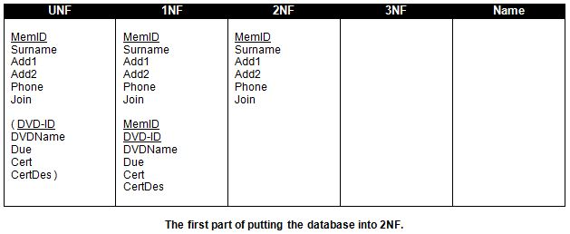

<div id="jsn-maincontent" class="span9 order1 row-fluid">
  <div id="jsn-maincontent_inner">
    <div id="jsn-centercol">
      <div id="jsn-centercol_inner">
        <div id="jsn-mainbody-content" class="jsn-hasmainbody">
          <div id="jsn-mainbody-content-inner1">
            <div id="jsn-mainbody-content-inner2">
              <div id="jsn-mainbody-content-inner3">
                <div id="jsn-mainbody-content-inner4" class="row-fluid">
                  <div id="jsn-mainbody-content-inner" class="span12 order1">
                    <div id="jsn-mainbody">
                      <div id="system-message-container"></div>

                      <div
                        class="item-page"
                        itemscope
                        itemtype="https://schema.org/Article"
                      >
                        <meta itemprop="inLanguage" content="en-GB" />

                        <div itemprop="articleBody">
                          <p>&nbsp;</p>
                          <h1 style="text-align: center">
                            Step 2 - From 1NF to 2NF
                          </h1>
                          <p>
                            <strong
                              >STEP 2 - Take the database in 1NF and put it into
                              2NF</strong
                            ><br />A database is in 2NF if it is in 1NF and all
                            the non-key attributes depend ENTIRELY upon the
                            primary key! An alternative way of viewing this is
                            to ask yourself which of the non-key attributes need
                            both key attributes specified to get back a value
                            for the non-key attribute. If a non-key attribute
                            needs both key attributes, then that non-key
                            attribute stays with the table with the compound
                            primary key. If the non-key attribute does not need
                            both key attributes, then it is moved into another
                            table.&nbsp;Now this is a mouthful again, but the
                            good news is that, like riding a bike, it is a lot
                            easier to see and do than explain!
                          </p>
                          <p>
                            <strong>2a)</strong> If any table in 1NF has a
                            simple primary key (made up of only one attribute)
                            then it is automatically in 2NF and can be copied
                            across to the 2NF column.
                          </p>
                          <p style="text-align: center">
                            
                          </p>
                          <p>
                            <span style="line-height: 1.5"
                              ><strong>2b)</strong> The next step is to identify
                              those non-key attributes (i.e. attributes that are
                              NOT part of a compound primary key) which are
                              related to only PART of the compound key.</span
                            >
                          </p>

                          <ul style="list-style-type: disc">
                            <li style="list-style-type: none">
                              <ul style="list-style-type: disc">
                                <li>
                                  In our example, the non-key attribute DVDName
                                  is dependent upon the DVD-ID attribute, which
                                  is part of the compound primary key. If I give
                                  you a DVD-ID, you should be able to get a
                                  DVDName from it. However, if I give you a
                                  Member's ID, that in itself will not let you
                                  get back the name of a DVD!
                                </li>
                                <li>
                                  Again, if you are given a DVD’s ID, you should
                                  be able to determine what certificate it is
                                  and indirectly what that certificate means.
                                  You can also think of it like this: what has a
                                  DVD’s certificate and the certificate’s
                                  description got to do with a member’s ID? The
                                  answer is of course nothing whatsoever. Both
                                  of those non-key attributes therefore need to
                                  be moved out of that grouping and into their
                                  own table. This is because those two non-key
                                  attributes do not depend upon both parts of
                                  the compound primary key in that table.
                                </li>
                                <li>
                                  The only attribute that requires some thought
                                  is 'Due'. A DVD is only due back if a member
                                  has it out. If you are given a DVD-ID, it
                                  might not be due back unless it has been taken
                                  out by a member! To be able to specify 'Due'
                                  you will need, therefore, to give the Member's
                                  ID and the DVD's ID.
                                </li>
                                <li>
                                  What we are saying is that DVDName, Cert and
                                  CertDes are all dependent upon the actual DVD,
                                  but not dependent at all upon the member's ID.
                                  Due is dependent upon the Member's ID and the
                                  DVD's ID.
                                </li>
                                <li>
                                  <span style="line-height: 1.5"
                                    >So now what do you do? You copy those
                                    non-key attributes that depend only on the
                                    DVD-ID attribute from the 1NF column to the
                                    2NF column, putting them into their own
                                    table.</span
                                  >
                                </li>
                              </ul>
                            </li>
                          </ul>
                          <p>
                            <strong>2c)</strong> You then copy the part of the
                            primary key that those non-key attributes depend
                            upon from 1NF into the new table you just created in
                            2NF. In this example, you copy the DVD-ID attribute
                            across. Now underline this attribute to show that it
                            is the primary key of this new group.
                          </p>
                          <p>
                            <strong>2d)</strong> You finally copy across any
                            attributes left over from the old group from 1NF
                            into 2NF, into their own table.
                          </p>
                          <p>
                            If you have done everything correctly, your Analysis
                            Table should now look like this:
                          </p>
                          <p style="text-align: center">
                            
                          </p>
                          <p>
                            <span style="line-height: 1.5"
                              >Some points to note. You now have three, related
                              tables. Do not be concerned if one table is only
                              made up of a compound primary key - that is quite
                              common (although it does not apply in this
                              example). At any time, the original record from
                              UNF can be retrieved from the three tables in 2NF,
                              because they are all linked! Your database is now
                              in 2NF because by definition it was in 1NF and you
                              have no tables where the non-key attributes only
                              depend on part of the primary key. (You just
                              removed them into their own table!). Going from
                              1NF to 2NF is usually the hardest part of
                              normalisation. Take your time and ensure you
                              understand each of the steps in this part of the
                              normalisation process. Once you have memorised the
                              steps, they are the same for every design!</span
                            >
                          </p>
                          <p>
                            The next step is to put the database into
                            3NF.<strong>&nbsp;</strong>
                          </p>
                          <p>&nbsp;</p>
                        </div>
                      </div>
                    </div>
                  </div>
                </div>
              </div>
            </div>
          </div>
        </div>
      </div>
    </div>
  </div>
</div>
